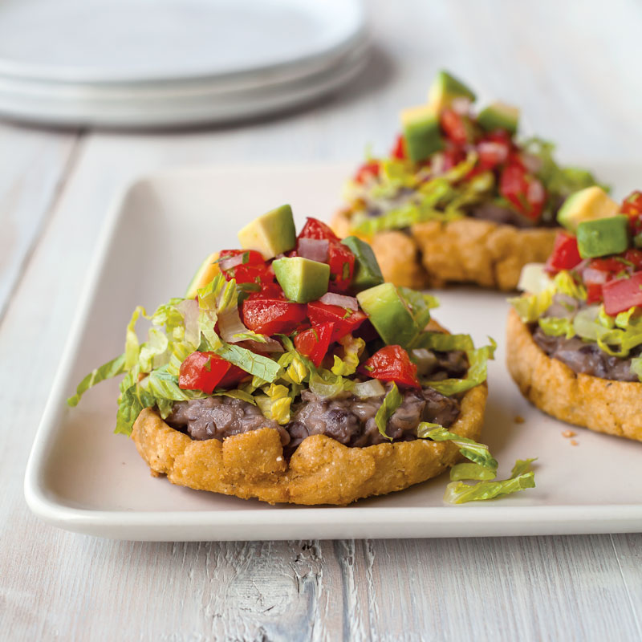

Sope Recipe

Description
This simple sope recipe is quick and easy for some
delicious appetizers suitable any occasion. Serve
with any topping you like!
Ingredients
- 3 cups of masa harina (Maseca is fine)
- 1 tablespoon of salt
- 2 cups of warm water, or as needed
- 1 quart of oil for frying
Directions
- Whisk masa harina and salt together in a bowl.
Stir in enough water until dough is smooth and
holds together.
- Form the dough into twelve 2-inch balls. Place
balls onto parchment paper and flatten to ½ inch thick
circles.
- Heat oil in a large deep fryer or large saucepan
to 400 degrees F (200 degrees C).
- Working in batches, fry a few sopes at a time
until lightly browned, about 30 seconds per side.
Transfer with tongs to a paper towel-lined plate
and let cool just until they can be handled, 2 to 3
minutes. Pinch the edges of the sope togeher to form a
little boat.
- Return sopes to the hot oil and fry until golden
and cooked through, 1 to 2 more minutes. Drain
on the paper towels.
- Add any topping you'd like! We recommend a combination
of cooked ground beef, refried beans, guacamole, and cheese!